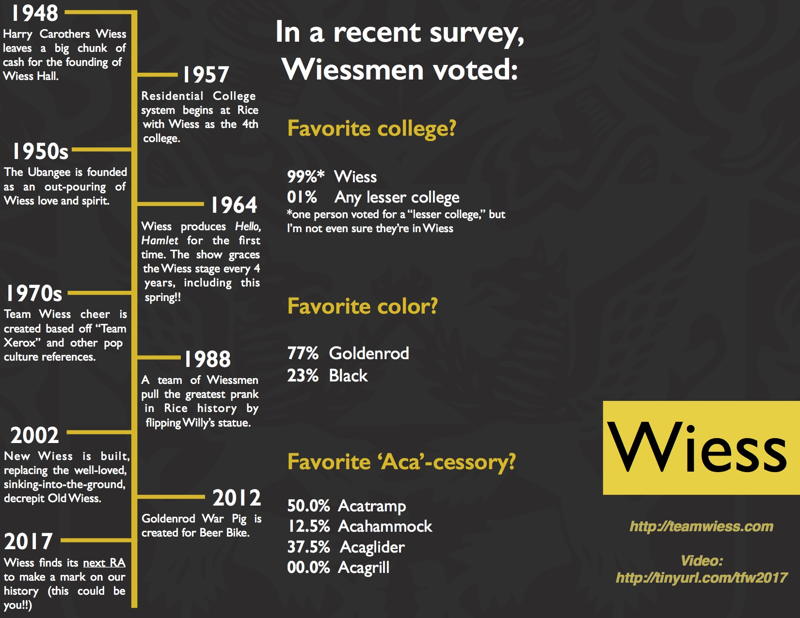

<div class="panel">
    <div class="panel-body">
      <br>
      <p style="text-align: center">
        Wiess College Spring 2017<br></p>
        <h2 style="text-align: center">Resident Associate Search</h2>
        <center>
        
      </center>
        <p style="text-align: center">A Resident Associate typically serves three to seven years. Living among the students, he or she is in the unique position to be a positive community facilitator, role model, and to provide guidance and leadership to college members. The RA therefore must be a visible participant in college life, accessible to students, and willing to stand in for the masters, when appropriate.</p>
        </br>
        
        <div class="well">
            <center style="font-size:13pt;">
              <u><h2>APPLY TO BE A WIESS RA</h2></u>
              <p>
              You can access the online application <u><a href="https://docs.google.com/a/rice.edu/forms/d/e/1FAIpQLSeFR2sE9IYvLXziLZRpm8X6IFCPXEMkLVbCyGkZ02QSTQeKNg/viewform?c=0&w=1" target="_blank">here.<u><br>(<a href="ra_search/Wiess College Resident Associate Application.pdf" target="_blank">PDF version</a></u></a></u>)
              <br><br>
              Further, you can read a letter about being a Wiess RA from Lenin Terrazas (current RA) <u><a href="ra_search/Being an RA at Wiess.pdf" target="_blank">here.</a></u> 
              <br><br>
             </p>
            </center>
        </div>
          <div>
              <center> </center>
          </div>
          <br>
        <div class="well">
            <center>
              <h2>What an RA means to Wiessmen - A Video</h2>
              <iframe width="740" height="430" src="https://www.youtube.com/embed/hkoTjgpyAag?rel=0&amp;controls=0&amp;showinfo=0?ecver=1" frameborder="0" allowfullscreen></iframe>
              <br><br>
              <i style="text-align: center">Recorded by Nilen Patel</i>
            </center>
        </div>
        <div class="well">
            <center style="font-size:13pt;">
              <h2>Current Wiess Resident Associates</h2>
            </center>
            <div class="row well" style="margin-left: 1px; margin-right: 1px;"> 
                <div class="col-md-4"> 
                    <h2>Lenin & Renata<br>3rd Floor RAs</h2> 
                    <!-- <hr>  -->
                     
                    <hr> 
                    <h4>Lecturer - Bioengineering</h4> 
                    <h4>Email: renata.ramos@rice.edu & lenin.terrazas@rice.edu</h4> 
                    <h4>Phone #: 713-348-22031</h4> 
                    <hr> 
                </div> 
                <div class="col-md-8" style="margin-top: 23px; font-size: 14px;"> 
                    <p>Renata is not known for making many mistakes, but once upon a time she was an Associate at a lesser college. She was quick to fix that lapse in judgment and dragged Lenin to join TFW. This will be their 5th year as RAs! Gavin (also known as the Acatoddler) and Evan (known as the Acababy) have been Wiessmen all of their lives: they were born across the street, but only took them 36 hours to find their way to Wiess. These four from the 3rd floor love to spend time around Wiess and Wiessmen, and their door is always open if you need to chat, relax or simply have somebody listen to you.</p> 
                    <p>Besides being RAs at the best college, Renata teaches in the Bioengineering department, Lenin works for Schlumberger, Gavin loves to play in the Acabowl and Evan goes wherever everyone else goes since he cannot move on his own. They enjoy food and travel and can be found regularly cheering for your Battlesows on the powderpuff field. Lenin likes scuba diving and Renata likes horseback riding; so Lenin dials back his respect for horses to go riding and Renata chooses to forget the reasons why humans are not aquatic to go diving.  Gavin absolutely loves baseball, frisbee, balls and the trampoline and he can be spotted playing in the Acabowl most days (he’ll drag you to play if you let him). Evan is always eating or sleeping, but will most likely be running around by the time you graduate. Join them for dinner, a movie, Monday Night Football or barbacoa study break!</p> 
                </div> 
            </div> 
            <div class="row well">
            <div class="col-md-4">
                <hr>
                <h2>Emilie Ringe<br>4th Floor RA</h2>
                
                <h4>Assistant Professor - Materials Science & Nanoengineering</h4>
                <h4>Email: emilie.ringe@rice.edu</h4>
                <h4>Phone #: 713-348-2582</h4>
                <hr>
            </div>
            <div class="col-md-8" style="margin-top: 23px; font-size: 14px;">
                <p>Emilie ("Emmie") is the 4th floor RA. She is a scientist (Materials Science) educated at Northwestern and Cambridge University. She is fascinated by understanding the world around her by shooting lasers and electrons at it, and also has wide-ranging interests and an always positive personality. Amongst her hobbies, she spends several days a month traveling, lots of it for work; she enjoys every moment of it. She also loves when people travel to see her, and several times a year she hosts her brother AJ or her partner John; both get involved with college life by co-organizing study breaks….talking of which, watch out for Emmie’s famous pancake study breaks, as well as liquid nitrogen ice cream shows!</p>
                <p>Emmie is a seasoned runner, and has completed 6 marathons so far. She is eager to share her love of running and healthy living with Fellow Wiessmen. Look for her weekly running schedule in your email inbox, and come join her for a moderately-paced 3 to 6 miles run around campus! She also loves speaking her native French, going to the symphony, and studying alongside Wiessmen.</p>
            </div>
        </div>
        </div>
        <div class="well">
            <center style="font-size:13pt;">
              <u><h2>PLEASE APPLY <u><a href="https://docs.google.com/a/rice.edu/forms/d/e/1FAIpQLSeFR2sE9IYvLXziLZRpm8X6IFCPXEMkLVbCyGkZ02QSTQeKNg/viewform?c=0&w=1" target="_blank">HERE.<u></a></h2></u>
              <p>
              Feel free to reach out to wiessmasters@rice.edu for more information.
             </p>
            </center>
        </div>
    </div>
</div>
